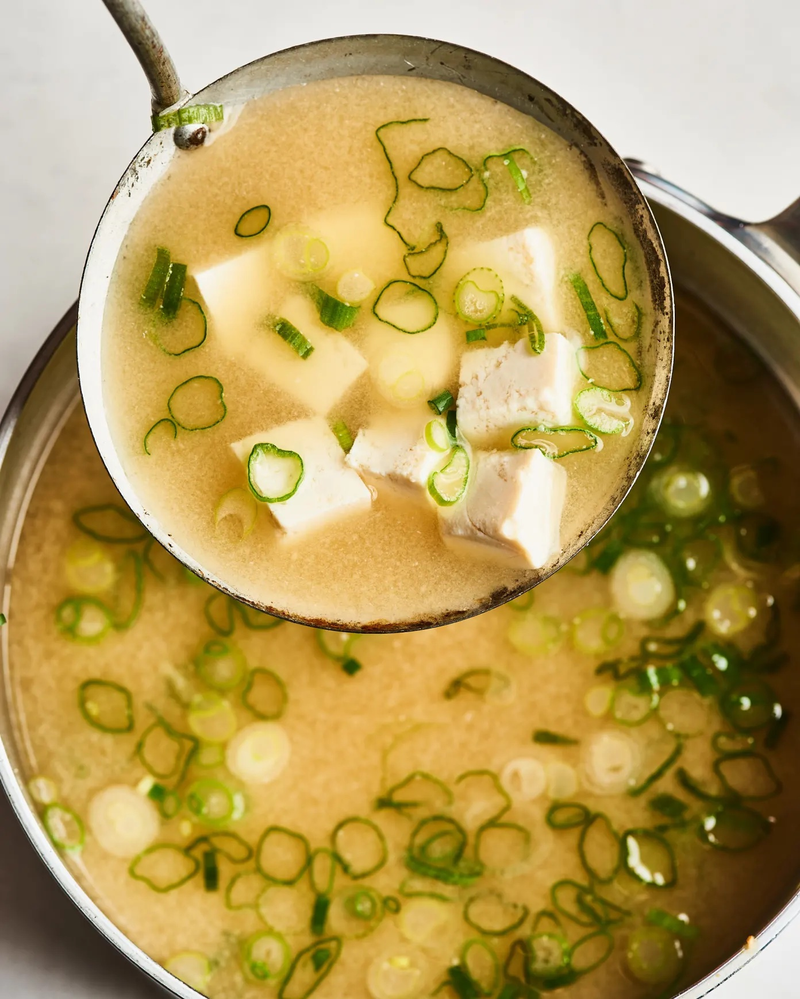

Maddy's Miso Soup
I love soup. And I like cooking a moderate amount. But after a long day of classes, I’m tried and I'm hungry. And all I want is a hot bowl of warm soup. ASAP. So I turned to miso soup.nIt has become a staple in my routine and my life. Its verstile, its healthy, its delicious and truly a recipe you will never get bored of! Without further adieu, here is my adapted Miso Soup recipe!

If you are looking to make this soup a little richer, and heartier. I would highly recommend adding some frozen wontons or dumplings. Just add them in after you stir in the miso, and cook until they are cooked all the way through.
If you want to create a miso soup egg drop soup corssover, I highly recommend wisking an egg or two the the boiling soup to make this soup even more delish and filling
Adding a soba or ramen noodle to the soup makes it that more delish. Just cook the noodle according to the instructions and stir in right before you are about to serve
Adding a hearty leafy green (great compliment to the egg) is a great idea. It can be whatever leftover greens you have in fridge that you need/ want to use up!
* If you have acess to Bonito Soup Stock I would definetly recommend as it
* You can also use Kombu to enhance this recipe